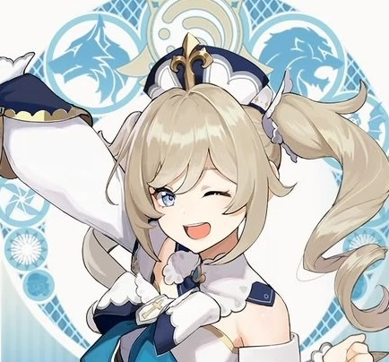
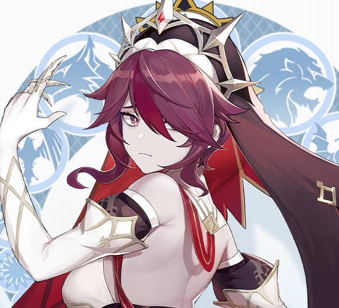
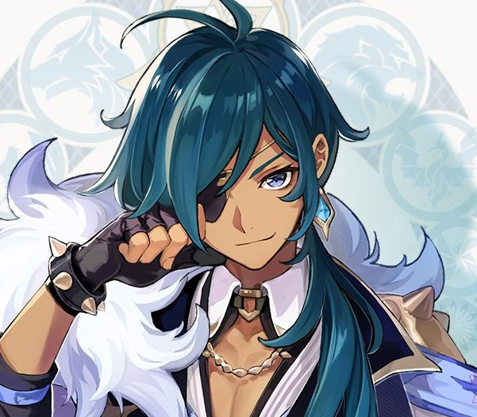

|  | Барбара |
Все жители Мондштадта боготворят Барбару, но слово «идол» она узнала из модного журнала. Подробнее: |
|  | Розария |
Розария - сестра церкви Фавония в Мондштадте. Кроме одеяния Розарии ничто не напоминает о её принадлежности церкви. Холодна и остра, как клинок. Уходит, когда ей заблагорассудится, не сказав ни слова. У неё важная миссия, вот только никто не понимает какая... Подробнее: |
 | Кэйа |
В Ордо Фавониус Кэйа является доверенным помощником действующего командира Джинн. Он может справиться с любой неразрешимой, на первый взгляд, проблемой. Подробнее: |
| Вернуться: |